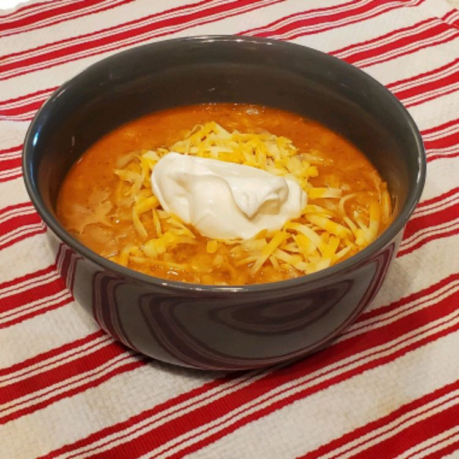

Home
All recipes and images were taken from All Recipes
Super Easy Chicken Chili

Description
All you have to know how to do is open some cans... This is so easy and so delicious. It will get you a second
date for sure!
Ingredients
-
2 tablespoons olive oil
-
1 onion, chopped
-
1 ½ (14 ounce) cans chicken broth
-
2 (15.5 ounce) cans great Northern beans
-
1 (4 ounce) can chopped green chile peppers
-
1 roasted chicken, bones and skin removed, meat torn into bite-size pieces
-
3 tablespoons ground cumin
-
2 tablespoons chili powder
-
2 tablespoons cayenne pepper
-
1 (8 ounce) container sour cream
-
1 (8 ounce) package shredded Monterey Jack cheese
Steps
-
Heat olive oil in a large saucepan over medium heat. Stir in onions, and cook until softened and translucent, about 3 minutes. Pour in chicken broth, great Northern beans, chopped chiles, and torn chicken. Season with cumin, chili powder, and cayenne pepper. Increase heat to medium-high to bring to a boil, then reduce heat to medium-low, and simmer for 10 minutes.
-
Stir in sour cream and simmer for 5 minutes. To serve, ladle into bowls and sprinkle with Monterey Jack cheese.